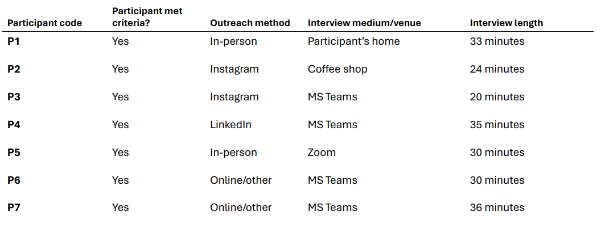

Image source: Spotify
Spotify's AI DJ, released in February 2023, is a beta feature available in-app that combines generative AI (genAI) and recommender system (RS) algorithms to provide users with new and familiar music in a hassle-free format. As a course project for a qualitative UX research class in my graduate program in Human Computer Interaction at Iowa State University, I chose to conduct generative research to better understand Spotify users' perceptions of the new feature. Though there is plenty of existing research on genAI and RSs individually, this is the first consumer-facing application of its kind to combine the two in such an explicit way; algorithmic chatbot applications like ChatGPT are probably the next closest comparison, but DJ is the first to use genAI to put an actual, literal voice to the AI while still recommending content to users. Companies continue to rush towards innovations using genAI in a breadth of use cases and Spotify's DJ begs the question: Is it working?
DJ is a new feature that, after starting a session, provides users sets of five or six songs (I call them mixes) vocally introduced and closed by a virtual DJ (named DJ X). Mixes are grouped based on themes such as what the user has been listening to recently, what the user listened to during a previous timeframe (e.g., songs from 2018), “vibes” (e.g., a chill vibe, or an upbeat vibe), artists the AI knows they already like, and more. Each mix starts with an introduction from DJ X, which usually is just a description of the mix theme, but sometimes goes into more detail on the artists and songs that follow. DJ X closes each mix with a quick statement (usually something like “Closing out this set with [artist name]”), then moves on to introducing the next mix. Rinse, repeat.
Users have limited control over DJ, namely just skipping tracks in individual mixes or rerolling into a new mix with the Remix button at the bottom right (pictured below). The same controls are available on both desktop and mobile devices. However, the content of each mix and mix themes are virtually uncontrollable and instead are selected by the algorithm based on what it thinks each user might want to listen to. One major goal of any RS is to keep users engaged with content it thinks they'll like; social media platforms have been using RSs for decades, and they've been growing in popularity. For example, TikTok's backbone is its RS; it's the thing that shows you new videos from creators you're unfamiliar with, and its underlying logic is the reason why it's so hard to close TikTok and catch some sleep.
What interested me most about Spotify's DJ was how dramatically different it is from other personalized content on the platform. Discover Weekly relies on Spotify's RS to curate a weekly playlist of novel content it thinks the user might like, as do so many other features in Spotify, but this is the first time they've put a literal name and voice to its algorithm. As someone who's spent a decent amount of time researching all things AI, I began to wonder what others with less domain knowledge thought of this personification of the AI. Has DJ made people think more about the algorithm? Has this changed how people think about and interact with Spotify overall?
I approached this study with three primary research questions:
As a requirement for the project, I used semi-structured qualitative interviews (SSQIs) as the data collection method. I recruited 7 research participants for these SSQIs (I recognize having only spoken to 7 people transforms the nature of these findings into preliminary themes that require further exploration; more on study limitations below). Each participant was a long-time Spotify user (free or premium subscription) that has used DJ at least 4 times overall, the last time being no longer than one month prior to the interview date. I utilized convenience sampling by findings participants in my immediate networks (personal, school, professional) due to having no budget or other resources to conduct this research. Participant and interview details are below.
Following data collection, I transcribed all interviews and conducted a thematic analysis using a bottom-up (inductive) approach. I used Taguette, a free and open-source qualitative analysis platform, to manage all codes and transcripts. While I do not believe that I attained complete meaning saturation due to only having spoken to 7 individuals, I identified 39 out of 47 codes (~83%) after coding only 2 transcripts, and 43 out of 47 codes (~91%) appeared in two or more transcripts, which suggests I reached code saturation. As the sole analyst and researcher on this study, I used the following methods to curb interpretive bias:
A few exciting themes emerged as I completed my analysis.
This was a contradiction I found in nearly all interviews: most participants trusted and relied on DJ to play familiar music that they already like, but also acknowledged at different points in the interview that they don't think DJ has a good handle on them or their preferences. Some felt mischaracterized by the algorithm. Others began questioning how the algorithm comes to certain conclusions about them and their listening habits. Take this quote from P1:
"I think it's funny. He's like, 'this is your Wednesday 4pm vibe.' And I didn't realize I had a vibe." (P1)
P1 trusted DJ to play music they liked, but also didn't understand the mechanisms that created their digital profile of listening habits. They also mentioned that this was the first time they thought about these mechanisms, which suggests that the famous black-box nature AI is becoming a more popular/visible topic in the public eye.
Most participants shared that their favorite use case for DJ is simply not having to think about what to play. Spotify is vast, as are music tastes. This vastness begets analysis paralysis for some. Many participants shared that they put DJ on when they're working on trivial tasks like driving or cleaning and don't want the added burden of needing to decide what to listen to. They trust DJ to be inoffensive enough for easy listening in situations where they're not interested in active listening sessions. As P2 puts it, many just want DJ to “play music at them” without any extraneous effort.
This finding was the most surprising and interesting to me. As P4 shared, people “know that the algorithm is watching … in a more direct way than it was before.” In some cases, this has made people think twice about clicking around on random songs or exploring artists they're unfamiliar with because they're afraid of sending inaccurate messaging to DJ. P1 said it best:
“I was thinking the other day of how quickly it picks up on something new that you listen to. Which is kind of annoying because I was going through some movie soundtracks, and now I'm just getting inundated with all sorts of stuff I don't actually want to listen to…sometimes when I'm searching and playing stuff I have a thought: 'Is this going to screw up my DJ?'” (P1)
Spotify should take note of this. Some users even shared that they'll explore new music on competing platforms like YouTube to avoid inadvertently influencing the AI which, of course, is probably something the folks at Spotify don't want happening. This finding begs a new question: Where should the RS draw the line between personalizing content and allowing users the freedom of exploration?
Opinions on the utility and added value of DJ X, the genAI DJ voice that guides users through DJ sessions, were panned. Some see DJ X as a friend or companion on long drives. Others find DJ X to be intrusive and disruptive to the listening experience, wishing instead for an uninterrupted listening experience.
Almost all participants expressed a desire for more control over the various facets of DJ. Many participants want to change its voice, such as how Amazon Alexa users can customize the gender and accent of the voice on their devices. Some users want more control over the content of the mixes, such as entering a brief prompt to set the vibe or selecting starting points with an artist or song. Most participants shared that, while they don't always love the mixes DJ provides, there are times where they wish a mix didn't end, and wish they had an option to keep a good mix going indefinitely. Finally, most participants expressed a desire for an easier way to communicate to the algorithm that they don't like a song or artist; they want a way to blacklist things they don't like.
“Something with Spotify I've noticed is it doesn't necessarily take into account music that you don't like…say you don't like a certain artist, I've struggled getting rid of those [in mixes].” (P6)
This study, though preliminary, suggests area for further research for the design teams at Spotify so they can continue to improve the DJ experience:
Convenience sampling is not ideal for this type of study. Future work should opt for near-random sampling to get the best breadth of sentiments from users. Additionally, repeating this study in different countries might prove useful, especially since DJ is still in its beta release and is being released in phases to international markets.
I learned a lot about qualitative research with this project. I struggled at the beginning with structuring this study to maximize the benefits of generative research; I tend to want to find a connection, a relationship between moving pieces to build some sort of predictive model. This, of course, is not the goal of qualitative research. However, I'm pleased with the results and find that they've made me think of questions I wouldn't have considered without this study. For example: Is there a relationship between motivations for using DJ and, say, a listener's desire to explore new music? This is one of many resulting questions that would be best answered with continued controlled experimentation. It is my hope that, with this research, curious minds at Spotify find the right questions to focus on towards making DJ the best service it can possibly be.
There's a brief presentation covering this study below. A full report is available for download here.